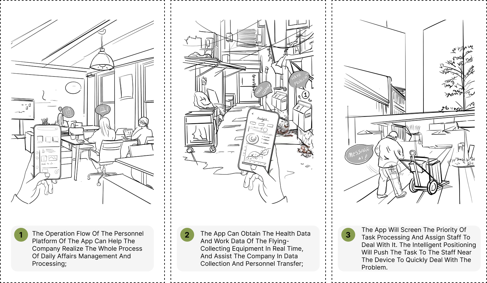
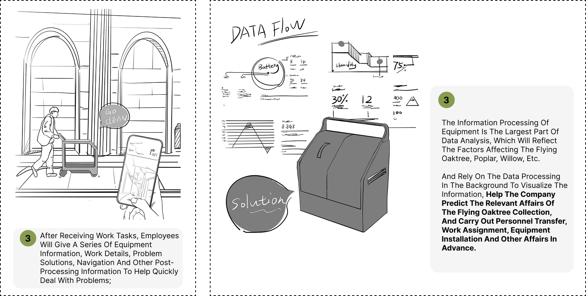
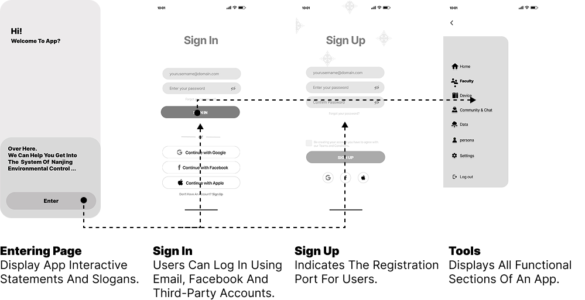
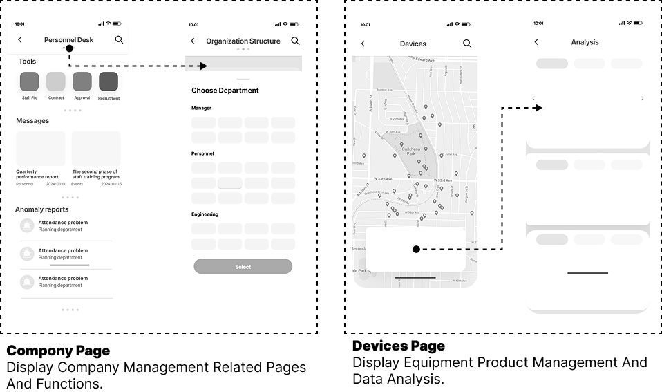
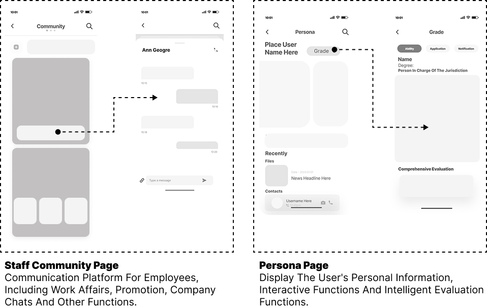

organic waste monitor system
issue background
In modern urban ecosystems, the natural rhythms of plant life cycles have been disrupted; in some instances, vegetation is even directly severed or removed by municipal authorities. Functional plant components—such as fallen leaves, pollen, blossoms, and seeds—often impose numerous intractable negative impacts on the daily lives of residents, leading to their frequent classification as "waste" and subsequent disposal within urban areas.

what i try to do
Design a data-driven system for urban organic waste management, combining environmental sensing, spatial prediction, and real-time workforce coordination.The project explores how waste collection can be anticipated, monitored, and dynamically managed at a city scale.
story board


UI system
Low-fi




home & dashboard
Designed a data-driven system for urban organic waste monitoring and management, integrating environmental sensing, spatial prediction, and real-time operational coordination. By analyzing environmental data and simulating accumulation patterns, the system predicts where and when waste will concentrate, and connects these insights to smart collection infrastructure and workforce deployment. This transforms waste management from reactive cleanup into a proactive, data-informed operation.

operation management
The workforce management module supports both field operations and management-level decision-making.It enables real-time task assignment, staffing adjustments, and progress tracking based on location and workload. A centralized dashboard integrates attendance, task, and performance data, providing visibility into operations and supporting efficient resource allocation.

environmental monitoring
The data monitoring module collects real-time environmental data to analyze patterns and predict when and where organic waste will accumulate. These insights inform operations by enabling proactive workforce allocation, optimized collection scheduling, and strategic placement of smart bins, while also monitoring equipment status in real time.
data Analysis

spatial prediction
The predictive modeling module analyzes spatial conditions to identify high-density accumulation zones of organic waste. Using 3D spatial scanning, the system captures environmental geometry and surface conditions, which are then processed to simulate the movement and accumulation patterns of organic particles under varying wind and environmental factors.

simulation results
These simulations are conducted in SolidWorks to evaluate how organic waste distributes across different spatial configurations, allowing the system to predict the most likely accumulation points. The results are translated into location-based deployment maps, guiding companies in placing collection infrastructure at optimal positions for maximum efficiency. This predictive approach not only improves initial infrastructure planning but also enhances ongoing monitoring by aligning data collection with high-impact areas.
Collection Equipment

collection product
The collection device functions as an integrated component within the system rather than a standalone product. It prioritizes data capture and operational reliability over form. The device uses a vacuum-based mechanism to ensure stable and continuous waste collection. It monitors the internal state of organic waste, including composition, volume, and condition. At the same time, it tracks its own operational status, such as capacity and performance. This data is transmitted to the platform in real time for monitoring and analysis. The device transforms from a passive container into an active data node within the system.